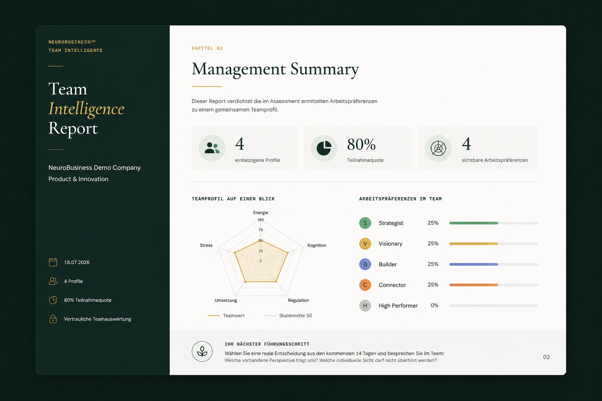
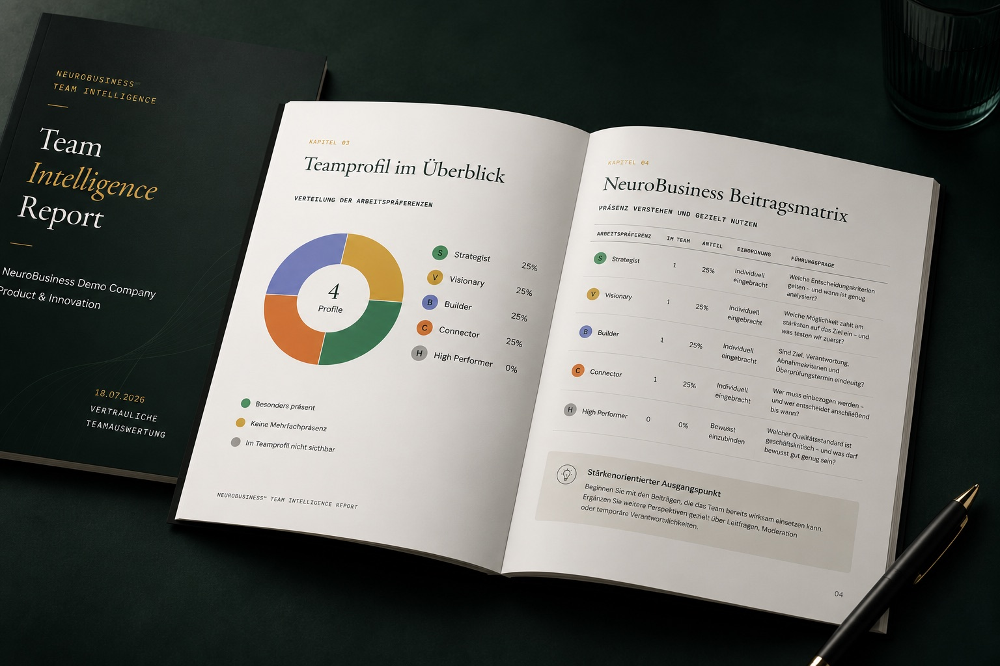

Evidenz statt Bauchgefühl.
Diagnostik für Coaches, die Entwicklung sichtbar machen.
NeuroBusiness™ ergänzt dein Coaching um eine psychologisch fundierte diagnostische Ausgangslage, strukturierte Reports und nachvollziehbare Folgearbeit. Dein Coaching bleibt persönlich — der Prozess wird klarer.
Die Ausgangslage
Coaching verändert Menschen. Doch Entwicklung bleibt oft schwer greifbar.
Gute Gespräche schaffen Bewegung. Für Klient:innen und Auftraggeber fehlt jedoch häufig eine gemeinsame, nachvollziehbare Ausgangslage.
NeuroBusiness ersetzt weder Beziehung noch Erfahrung. Das System ergänzt dein Coaching um eine strukturierte diagnostische Ebene — damit Muster früher sichtbar, Gespräche fokussierter und nächste Schritte anschlussfähiger werden.
Was Auftraggeber heute erwarten
Von guter Begleitung zu nachvollziehbarer Entwicklung.
Nicht mehr Marketing, sondern mehr Klarheit: über Ausgangslage, Prozess und die fachlich begründeten nächsten Schritte.
Transparenz
Klient:innen verstehen, wo sie starten und woran sie konkret arbeiten.
Struktur
Diagnostik, Debrief und Coaching folgen einer gemeinsamen Logik.
Anschlussfähigkeit
Erkenntnisse lassen sich in Ziele, Folgearbeit und Re-Assessments übersetzen.
So arbeitet das System
Ein klarer Prozess — ohne dein Coaching zu standardisieren.
NeuroBusiness schafft einen wiederholbaren Rahmen. Deine Methode, deine Beziehung und deine fachliche Entscheidung bleiben zentral.
Auftrag klären
Ziel, Kontext und passende diagnostische Fragestellung definieren.
Diagnostik
50 arbeits- und businessbezogene Fragen strukturiert bearbeiten.
Executive Report
Profil, Muster, Stärken und mögliche Entwicklungsfelder aufbereiten.
Debrief
Ergebnisse gemeinsam einordnen und Hypothesen prüfen.
Coaching
Individuelle Ziele und Interventionen aus dem Kontext ableiten.
AI Companion
Vorbereitung, Reflexion und Kontinuität zwischen Sitzungen unterstützen.
Re-Assessment
Veränderungen zu einem späteren Zeitpunkt erneut betrachten.
Entwicklungsreport
Fortschritt und sinnvolle nächste Schritte nachvollziehbar bündeln.
Für deine Coaching-Praxis
Was NeuroBusiness™ in deinem bestehenden Prozess verändert.
Gemeinsame Ausgangslage
Du und dein Klient starten mit einer strukturierten Sprache für Arbeitsweise, Stärken und mögliche Blockierungen.
Reproduzierbarer Prozess
Diagnostik, Report, Debrief und Folgearbeit greifen ineinander, ohne deine eigene Coaching-Methode zu ersetzen.
Nachvollziehbare Entwicklung
Ziele und Veränderungen werden entlang eines klaren Ausgangsprofils reflektiert statt nur aus dem Moment heraus bewertet.
Coach bleibt Entscheider
Reports und AI-Unterstützung bereiten Erkenntnisse auf. Die fachliche Einordnung und Begleitung bleiben bei dir.
Für wen ist das Programm?
Du passt zum Programm, wenn mindestens eines zutrifft.
Business Coach
Du begleitest Selbstständige und willst ihnen von Tag 1 ein klares Profil geben — statt erst nach Monaten zu verstehen, wie dein Klient wirklich tickt.
Facilitator & Trainer
Du leitest Workshops, Mastermind-Gruppen oder Team-Entwicklungen und willst ein System, das sofort Tiefe erzeugt und Gruppenarbeit strukturiert.
Unternehmensberater
Du arbeitest mit Gründern oder Führungskräften und willst psychologische Tiefe in deine strategische Beratung integrieren, ohne zum Therapeuten zu werden.
Psycholog:in
Du willst deine psychologische Expertise in arbeits- und businessbezogene Beratung übersetzen — mit klarer Abgrenzung zu therapeutischen Anwendungen.
Mentor & Advisor
Du begleitest Gründer informal oder als Accelerator-Mentor und willst ihnen von Anfang an eine klare Sprache über ihre Stärken und blinden Flecken geben.
HR & Organisationsentwicklung
Du baust Teams und willst über Rollen und Fähigkeiten hinaus auch die psychologische Dynamik verstehen — wer ergänzt wen, wo entstehen Konflikte strukturell.
Inhalte
Was du lernst
Das NeuroBusiness™ Framework
Die 5 Psychotypen, Musterarchitektur, Blockierungslogik und die Brücke zwischen Psychologie und Strategie.
Diagnostik-Auswertung & Lizenz
Wie du das Diagnostic durchführst, Reports auswertest und Ergebnisse in Handlungsempfehlungen übersetzt.
Das NeuroBusiness™ AI-Tool
Individuelle Reports generieren, Muster analysieren, Empfehlungen automatisiert aufbereiten.

Ein Ergebnis, mit dem du weiterarbeiten kannst
Der Report macht die diagnostische Ausgangslage verständlich.
Nicht als fertiges Urteil, sondern als strukturierte Grundlage für Debrief, Coachingziele und passende Folgearbeit.
Entwicklungspfad
Vom Practitioner zum Master
① Practitioner
Einstieg & Lizenz. Du führst das Diagnostic durch, wertest aus und arbeitest mit dem AI-Tool.
② Senior Practitioner
Vertiefung nach nachgewiesener Praxis. Erweiterte Fallarbeit und Team-Diagnostik.
③ Master Practitioner
Höchste Stufe. Eigene Lizenzpartner-Perspektive und vertiefte methodische Kompetenz.
Dein Business Case
Ein Werkzeug, das Diagnose und Folgearbeit verbindet.
Die Zertifizierung gibt dir keine pauschalen Umsatzversprechen, aber drei klare Wege, die Diagnostik wirtschaftlich und fachlich sinnvoll in deine bestehende Praxis einzubauen.
Eigenständiges Diagnostik-Angebot
Nutze die Auswertung als klar umrissenes Einstiegsprodukt mit Report und Ergebnisgespräch.
Qualifizierter Beratungsstart
Beginne Coaching und Beratung mit einer gemeinsamen Sprache für Stärken, Blockierungen und Arbeitsweise.
Strukturierte Folgearbeit
Leite aus dem Profil passende Workshops, Coaching-Schwerpunkte und nächste Entwicklungsschritte ab.
Wissenschaftliche Grundlage
Psychologisch fundiert. Für den Business-Kontext entwickelt.
NeuroBusiness übersetzt psychologische Erkenntnisse in ein strukturiertes Modell für Arbeitsweise, Entscheidungen und beruflichen Kontext. Forschung, Anwendung und Daten fließen kontinuierlich in seine Weiterentwicklung ein.
Psychologische Grundlage
Konstrukte und Hypothesen werden fachlich begründet und dokumentiert.
Business-Kontext
Die Einordnung bezieht Arbeitsweise, Rolle und beruflichen Kontext ein.
Systematische Weiterentwicklung
Erkenntnisse aus Forschung, Anwendung und Daten präzisieren das Modell fortlaufend.
Klarer Anwendungsbereich
Für Coaching und Beratung entwickelt — klar abgegrenzt von klinischer Diagnostik und Therapie.
Reportqualität
Ein Ergebnis, das im Kundengespräch trägt.
Klar strukturiert, visuell verständlich und so aufbereitet, dass aus diagnostischen Mustern anschlussfähige Gespräche und nächste Schritte entstehen.

Investition
Klar. Transparent. Einmalig.
Certified NeuroBusiness Practitioner
Öffentlicher Standardpreis
einmalig · Ratenzahlung möglich
Kontakt
Lass uns sprechen.
Du hast Fragen zum Programm oder bist bereit loszulegen? Wir antworten innerhalb von 24 Stunden.
Häufige Fragen
Was du vor dem Einsatz wissen solltest.
Ersetzt NeuroBusiness mein Coaching?
Nein. NeuroBusiness ergänzt deinen bestehenden Prozess um eine strukturierte diagnostische Ausgangslage, Reports und nachvollziehbare Folgearbeit.
Ist NeuroBusiness ein Persönlichkeitstest?
Nein. Im Mittelpunkt stehen arbeits- und businessbezogene Präferenzen, Denk- und Entscheidungsmuster sowie ihre Bedeutung im jeweiligen Kontext.
Wie ist der wissenschaftliche Entwicklungsstand?
NeuroBusiness wird psychologisch fundiert für den Business-Kontext entwickelt. Erkenntnisse aus Forschung, Anwendung und Daten fließen kontinuierlich in die Weiterentwicklung des Modells ein.
Wie kann ich die Diagnostik in meiner Praxis einsetzen?
Als strukturierten Einstieg in Coaching und Beratung, als eigenständige Auswertung mit Report oder als Grundlage für individuelle Empfehlungen und Folgearbeit.
Wie funktionieren Credits und laufende Kosten?
Ein Credit entspricht einer vollständigen Diagnostik mit persönlichem Report. Fünf Starter-Credits und ein Monat Coach AI Companion sind enthalten. Weitere Pakete und optionale Folgekosten werden vor der Buchung transparent ausgewiesen.
Ist das Practitioner-Programm vollständig online?
Ja. Das kompakte Intensivtraining findet live online statt.
Mach dir zuerst selbst ein Bild.
Erhalte mit dem kostenlosen Quick-Scan eine erste Orientierung oder sprich mit uns über den Einsatz der vollständigen Diagnostik in deiner Praxis.
Certified-Practitioner-Programm des German Institute of Positive Psychology.